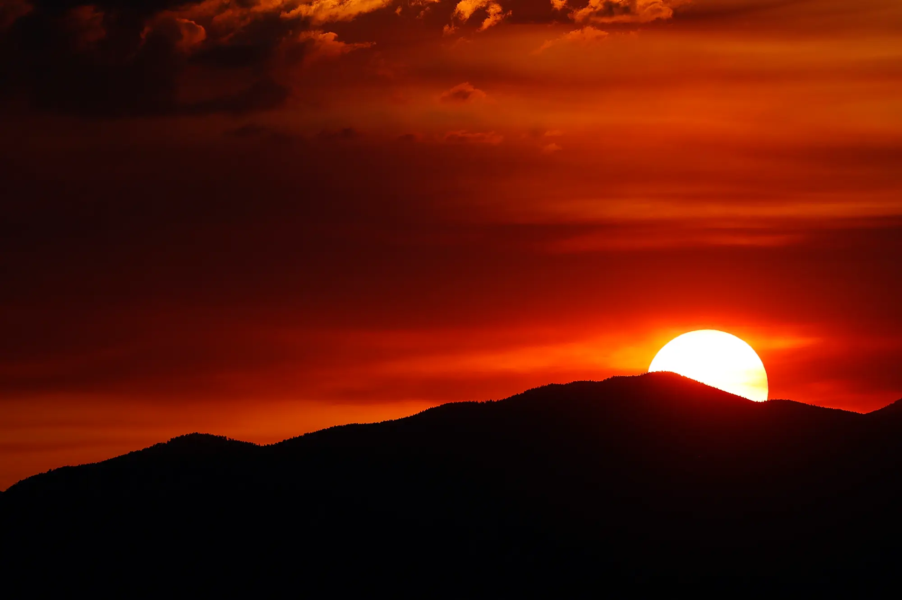
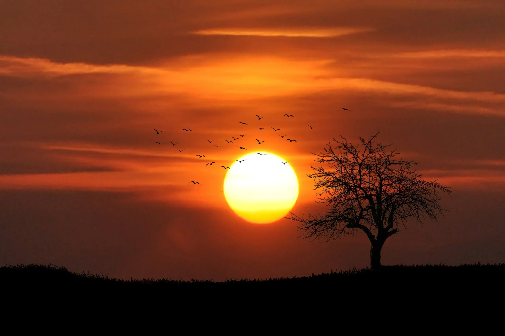
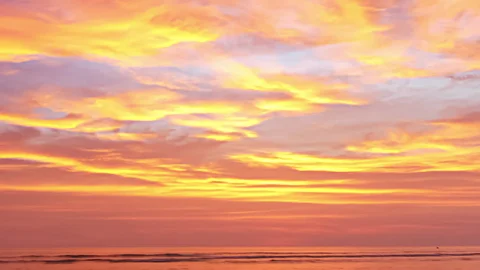
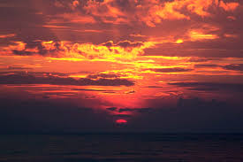

ARTICLE 3:SUNRISE
- What is a Sunrise?
- A sunrise is the moment when the sun appears above the horizon, marking the beginning of a new day.
- Types of Sunrises
- Sunrises can be categorized into different types, including:
- Cloudy sunrises: characterized by clouds that reflect the sun's colors
- Clear sunrises: characterized by a clear sky and a vibrant display of colors
- Beach sunrises: characterized by the sun rising over the ocean
- Benefits of Watching Sunrises
- Watching sunrises can have several benefits, including:
- Improving mood and overall well-being
- Reducing stress and anxiety
- Providing a sense of calm and relaxation
- Best Places to Watch Sunrises
- Some of the best places to watch sunrises include:
- Beaches: such as Hawaii, California, and Florida
- Mountains: such as the Rocky Mountains, the Himalayas, and Mount Kilimanjaro
- - Deserts: such as the Sahara Desert, the Mojave Desert, and the Sonoran Desert
- Tips for Capturing Sunrise Photos
- To capture stunning sunrise photos, follow these tips:
- Use a tripod to stabilize your camera
- Use a wide-angle lens to capture the entire scene
- Shoot in RAW format to capture more detail and color



